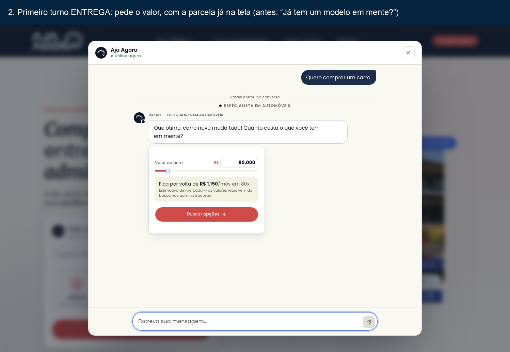
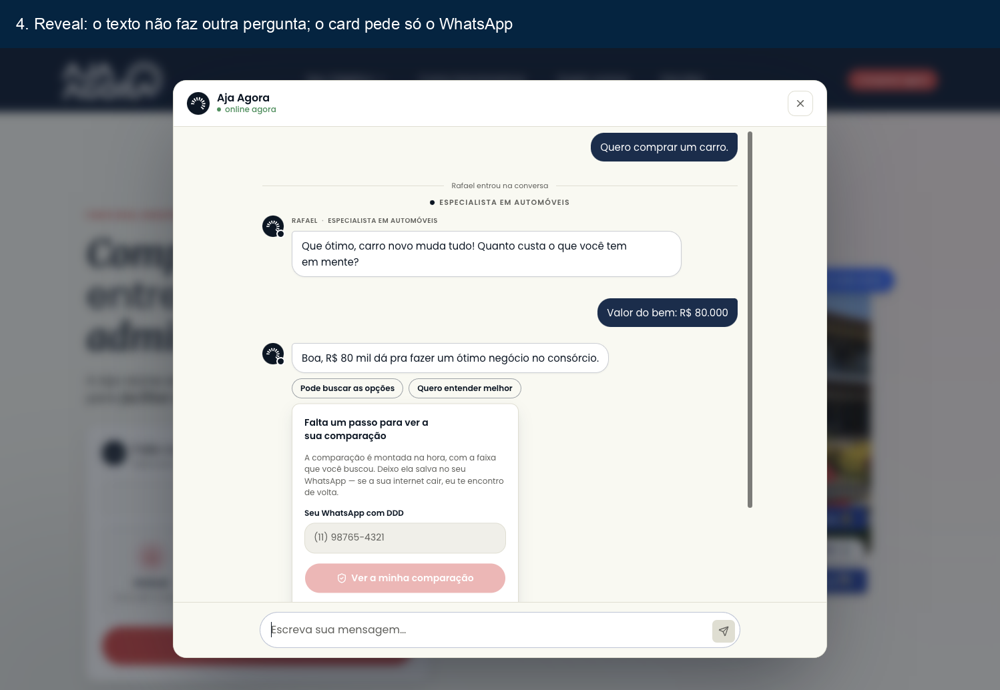
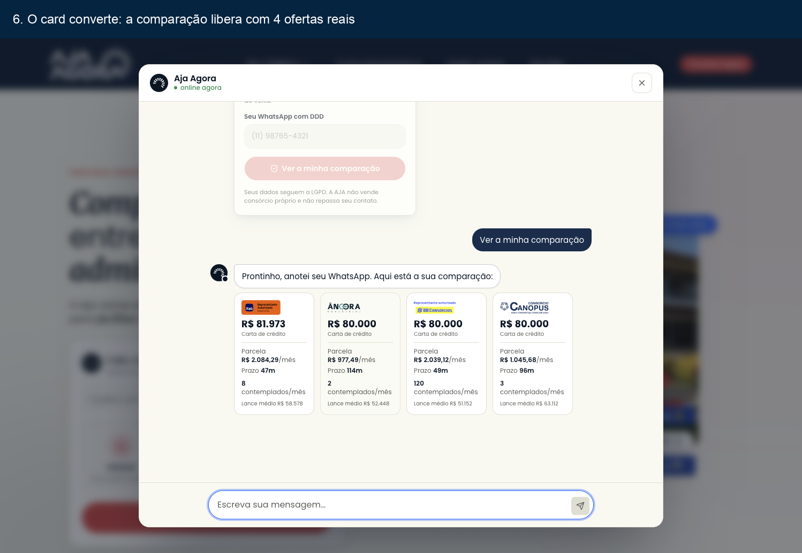

Condução e conversão — dossiê de entrega
Aja Agora · 05/10/2026 · PR #156 (merge e8f3b8c1 em main) · em produção desde 15:05 · plano docs/design/planos/2026-10-05-conducao-e-conversao.md
O que mudou desde o último relato:
- O P5 não era verba desperdiçada: era atribuição perdida. Depois do deploy, as campanhas de "zero chegada" aparecem com gente: CR-002 (carro) com 44 visitas e 6 conversas, CR-001 com 28 visitas e 4 conversas.
- O P3 foi refutado: a "Lucia" recusou três vezes e o agente respeitou. Nada foi mudado ali.
- O custo de IA cobrável é US$ 75,89 (R$ 378,37) de 24/06 a 05/10, pelo gateway. O Langfuse dizia US$ 16, porque não tem o preço do qwen cadastrado.
- A revisão de código achou 10 defeitos nos blocos do enxame antes do merge. O mais grave: o alerta de crédito do LLM nunca dispararia no WhatsApp. Todos foram corrigidos com teste.
1 · Visão macro — o que passou a existir
Quem chegava pelo anúncio caía num agente que perguntava antes de entregar. O texto pedia uma coisa e o card na tela pedia outra: "Já tem um modelo em mente?" ao lado do card de valor; "Você já fez consórcio antes?" ao lado do card do WhatsApp. Ao mesmo tempo, a visita que vinha pelo /direto (o destino dos anúncios) perdia a campanha, e o painel lia como "verba sem chegada".
Em paralelo: a falha de crédito do LLM vira alerta (e-mail + Cortex) em vez de silêncio; a régua não deixa linha "vencida" que nunca vai sair; o painel de custo volta a ler o Langfuse; e saiu o relatório de custo para a Bruna cobrar.
2 · Decisões — por que assim
| Ponto | Escolhido | Descartado, e por quê | O que a escolha NÃO dá |
|---|---|---|---|
| P1/P2 condução | Dar ao modelo o fato do card daquele turno e tirar do prompt o "modelo antes do valor" | Trocar para o Haiku: o defeito medido é de prompt (texto × tela), e trocar o modelo agora mediria a variável errada (decisão de 05/10 mantida) | Não prova que o qwen conduz bem no resto da jornada; isso se mede na janela seguinte |
| Nome trocado (Bruna → "Ana") | Tirar os nomes de exemplo copiáveis e fazer a recusa contar ao modelo a fala real | Guard ou regex sobre a frase "o sistema não deixou": fala ruim não vira regex, e esconderia a causa | Se o modelo inventar outro nome sem exemplo nenhum, a âncora recusa, mas a fala pode sair estranha naquele turno |
| Atribuição | /direto em LANDINGS + backfill que transcreve a UTM do referrer | Deixar o histórico errado: a dashboard é a régua, e o sinal estava gravado no próprio referrer (não é atribuição inventada) | Números já reportados (paper de 05/10) mudam |
| Régua (teto) | Reagendar next_touch_at (a tela já deriva "Cota de 30 dias cheia") | Encerrar com motivo novo: a tela não tem rótulo para ele, e a linha sumiria de "ativo" como se a sequência tivesse morrido | — |
| Fonte do custo | LiteLLM_DailyUserSpend (gateway), com Langfuse como conferência | Langfuse como fonte: sem preço do qwen ele registra zero (278 observações a US$ 0,0000) | Não separa conversa real de teste da casa; a key é de produção |
3 · Onde o código mudou
59 arquivos · 21 novos · 35 alterados · 3 removidos · +9.654 / −699 linhas (5.165 delas são o snapshot do drizzle). Base para a conta: d5441402 (merge de main) → e8f3b8c1.
| Bloco | Arquivos existentes tocados (onde mora o risco) | O que mudou |
|---|---|---|
| B1 condução | system-prompt.ts, gate-questions.ts, langgraph/nodes/converse.ts | Sai o "modelo antes do valor"; nomes de exemplo viram <nome>; contexto do card de valor/telefone só no turno em que ele é emitido |
| B2 nome | tools/ai-sdk.ts, orchestrator/directives.ts, leads/contact-capture.ts | Recusa nao_ancorado distinta; tool-result carrega a fala real; turno do servidor não inventa fala |
| B3 atribuição | src/proxy.ts + drizzle/0064_backfill_utm_do_direto.sql (novo) | /direto no matcher; backfill decodifica como o URLSearchParams |
| B4 régua | remarketing/motor.ts, workers/remarketing-cycle.ts | Linha no teto reagenda |
| B5 erro do LLM | chat/stream-error.ts, whatsapp/processor.ts, theater/theater-chat.tsx + llm/erro-do-llm.ts, llm/alerta-do-llm.ts (novos) | Classifica billing/rate-limit; alerta com dedupe só após envio; cliente vê texto em português |
| B6 admin | admin/conversa/conversa.tsx (novo), removidos whatsapp-view.tsx e artifact-preview.tsx | Um visualizador; card pelo payload ou rótulo humano; desempate de ordem estável |
| B7 custo | admin/custo-de-ia.ts + scripts/relatorio-custo-ia.ts (novo) | Métricas v2; janela clampada; concorrência ≤ 4; credencial fora do argv |
| B8 herdado | filtro-ab.tsx, crm/reset-tables.ts, api/chat/route.ts | As 3 falhas antigas de test:unit |
4 · Impacto na superfície — o smoke em produção
Jornada real em ajaagora.com.br às 15:09, depois do deploy (conversa 95a5cbde, marcada como simulada em seguida, com o telefone da equipe, que fica fora da régua). Vídeo completo: ~/Downloads/smoke-aja-2026-10-05/smoke-aja-conducao-2026-10-05.mp4 (30,8 s).



5 · Pontos de risco
Alerta de crédito do LLM nunca dispararia no WhatsApp CORRIGIDO — introduzido pelo enxame
O registro da falha ficou no .catch do webhook, mas o processor já engolia todo erro e respondia "Desculpe, tive um problema". O incidente de 01/10 (29 erros 400 sem ninguém avisado) se repetiria justamente no canal que o bloco deveria cobrir.
Correção: o registro foi para o catch do processor (todos os caminhos), e o dedupe só marca depois de um envio com sucesso. Achado pela revisão /code-review high. Commit 7fcc3782.
Modelo avisado de card que não estava na tela CORRIGIDO — introduzido pelo enxame
A primeira versão do B1 dizia "o card do WhatsApp aparece NESTE turno" em todo turno com desbloqueio pendente; o adapter só manda o card no turno do reveal. O modelo apontaria para um card inexistente e o funil travaria. Correção: o fato só vale no turno em que o card é emitido. Commit d2ece2f8.
Backfill gravaria a UTM ainda codificada CORRIGIDO ANTES DE RODAR
A mesma campanha viraria dois grupos na dashboard (CR%2D002+CARRO × CR-002 CARRO). A migration foi corrigida antes do deploy para decodificar como o caminho vivo. Antes do deploy medi os 1.053 referrers candidatos: só escapes ASCII (%25 %2B %2F %7B %7C %7D), sem risco de abortar.
Relatório de custo subestimava o valor a cobrar CORRIGIDO
A 1ª versão mostrava o LiteLLM com "0,0000" em agosto (dado expirado, não gasto zero) e total de US$ 1,95. Refeito duas vezes até a fonte certa.
6 linhas da régua "vencidas" que nunca sairiam CORRIGIDO
Cobertura: src/lib/workers/remarketing-cycle.teto-reagenda.test.ts, src/lib/remarketing/motor.teto-reagenda.test.ts.
Nome de exemplo copiado como dado (Bruna → "Ana") CORRIGIDO — herdado
Confirmado no trace do Langfuse de produção (c762da1f…): duas chamadas save_contact_name("Ana"), duas recusas name_invalid sem motivo, e a frase inventada. "Ana" estava literalmente na instrução de sistema e também no prompt publicado no Langfuse (v7). Publicado v8 sem nomes de exemplo. Cobertura: src/lib/agent/langgraph/save-contact-name.nao-ancorado.integration.test.ts.
Cliente veria o erro cru em inglês CORRIGIDO — herdado
stream-error.ts devolvia error.message. A 1ª versão ligou o texto em português num componente que nenhuma rota renderiza (ChatLayout); religado no componente vivo (theater-chat.tsx). Cobertura: theater-chat.erro-do-stream.test.tsx.
6 · O que ficou em aberto
- O antes/depois de conversão ainda não existe. A correção entrou às 15:05 de 05/10; mortes no primeiro turno (15 de 31 na janela 02–05/10) e conversão do card do telefone (5 de 14) só se comparam com tráfego novo. A amostra é pequena: será sinal, não prova estatística.
- Dois chamados à ação no turno do reveal. O smoke mostrou os botões "Pode buscar as opções / Quero entender melhor" ao lado do card do WhatsApp: é card do servidor, não do modelo, e não estava no escopo. É o próximo candidato se a conversão do card não subir.
- Linha
d8bc426evencida desde 21/09: conversa marcada como simulada depois de entrar na régua; o ciclo filtravais_simulated = falsee nunca mais a visitava. Corrigido no B10 (da9c5e79, teste de integração com banco 16/16), que vai para produção no PR seguinte. A medição pós-deploy está no fim deste dossiê. - Dedupe do alerta do LLM é por processo: um restart ou outra réplica do ECS pode repetir um alerta na mesma hora. Persistir exigiria tabela.
- O Langfuse não tem preço do qwen. O painel de custo por conversa fica em "sem dado" enquanto não se cadastrar o preço do modelo no Langfuse (decisão do dono: cadastrar ou manter o gateway como fonte).
utm_campaignchega em dois formatos (id numérico e nome por extenso), conforme o anúncio. A mesma campanha aparece em duas linhas. É configuração de URL no Gerenciador de Anúncios, sem conserto no código.- Visualizador do admin sem captura em produção: o browser do Orca não tem sessão do painel, e digitar a senha de produção não é permitido ao agente. Ficou provado pelo teste de componente (
conversa.test.tsx, 15 casos). - O relatório de custo não foi enviado à Bruna nem ao Gustavo: o envio a terceiros é seu.
7 · Como validar você mesmo
Na tela
- Abra ajaagora.com.br numa janela anônima → "Carro". Esperado: o agente pergunta quanto custa e o card mostra a parcela estimada; não pergunta o modelo.
- Clique em "Buscar opções". Esperado: o texto não faz outra pergunta; aparece o card do WhatsApp (variante A) ou as ofertas borradas (B).
- No admin, abra a conversa
95a5cbde. Esperado: nenhum[card: …]cru; "Pediu o WhatsApp para liberar a comparação" no lugar. - Assista a
~/Downloads/smoke-aja-2026-10-05/smoke-aja-conducao-2026-10-05.mp4.
Conferindo os riscos
Pelos testes (última execução, na base integrada)
Missão do chefe do enxame (Claude) com gerente Pi (enxame-agentes). Diários: .orientacao/diario.md e .orientacao/diario-enxame.md da worktree chefe-conducao.